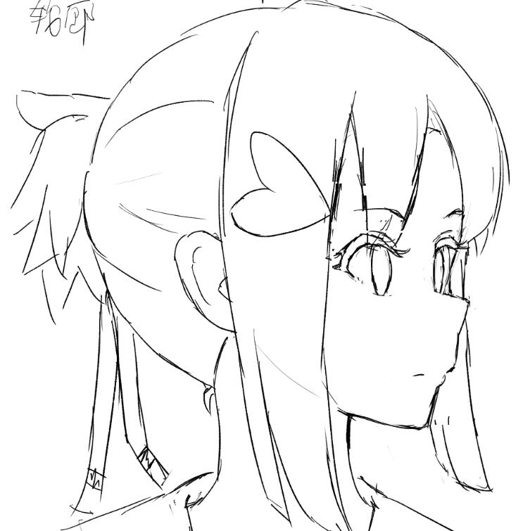
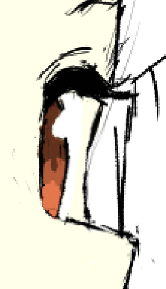
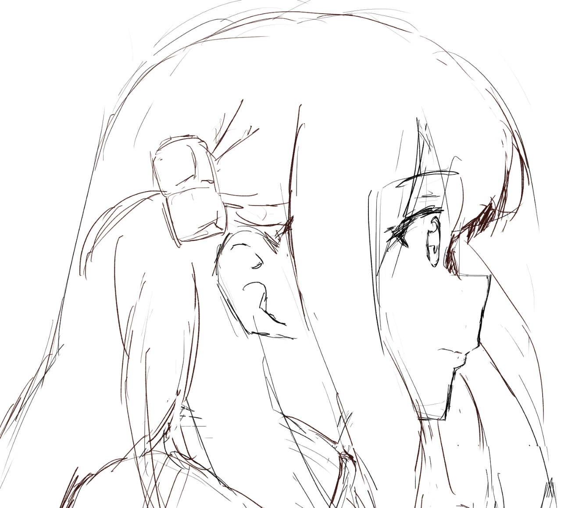
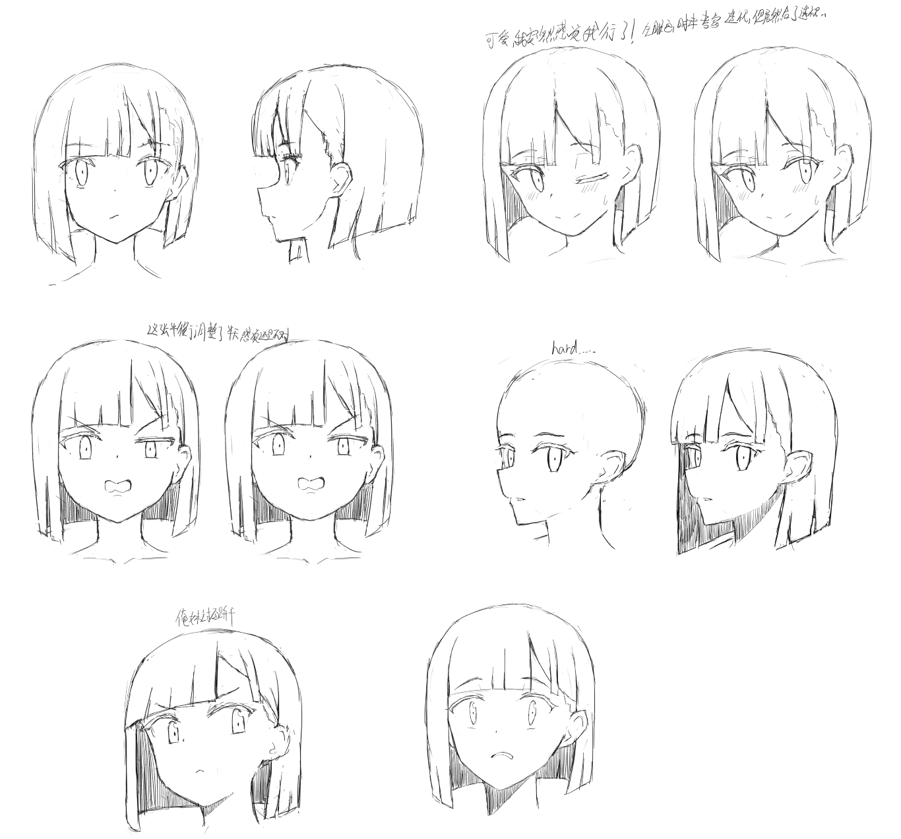

布丁头部设定集绘制
本打算去换换口味先去做创作型项目的，但意识到我这有点逃避的意思。
顺便，我后面尝试再改一下画风……我想把头顶实际地画得更扁（就是说以虫原老师的仰侧脸的形状为基准去触发），再看看实际效果。
根据当前的认知，再次改了一下之前画的一张侧脸，鼻子挺到什么位置考虑了半天，然后远离镜头的那只眼睛，睫毛和眼球的位置也纠结很久：

睫毛，考虑到眼球的立体性，实际上只画了中间突出的部分——靠近鼻子的部分被鼻子挡住，所以那里的睫毛我直接给他“切断”了，没有继续向下；远离鼻子的部分因为看不到，所以睫毛没有再往下走，眼球的圆形轮廓也尝试描了一下。但这里有一个问题是眼球之外，还能看到皮肤吗？

这个角度确实不好画…
然后，热身再次临摹了昨天看不出仰视感的那张图，这次更有感觉了，我意识到嘴巴的线条对塑造这个仰视感作用很大……但嘴巴本身就是一个非常微妙的东西，用很少的线条就要表达很多信息，太复杂了……下巴对仰视感也有意义，仰视时，下巴会更加平缓一些（能看到下巴下方的三角形，虽然我并没有画出来）。

OK……我要现在就做出调整——我现在就要去画一个角色的设定集，先获得一些感性经验再来。我确实认识到，研究型项目应当在创作型项目之后引入。所以，这篇笔记先搁置！我们来玩一点好玩儿的东西。
画的对象是DIY的布丁，还是那个原因——她的发型对脸型的遮挡不大，而且很容易画，使用她作为模特是合适的。
TMD，下面的话你等多画几个大头再说！
在实际画的过程中……感觉到自己好像在某些程度上开了窍了，虽然我仍旧害怕下笔，害怕开始，但画出来后就感觉，诶，我好像能够处理好？
但倘若，倘若我真的有进步（我仍旧对此不确定，甚至有些害怕，认为还需要更多实践去检验），那也是因为我改变了思维方式的结果，即使画出来的全是线条，但我脑子里想的是三维的头部而非二维的形状。
直接贴结果，没啥想法。

本博客所有文章除特别声明外，均采用 CC BY-NC-SA 4.0 协议 ，转载请注明出处！